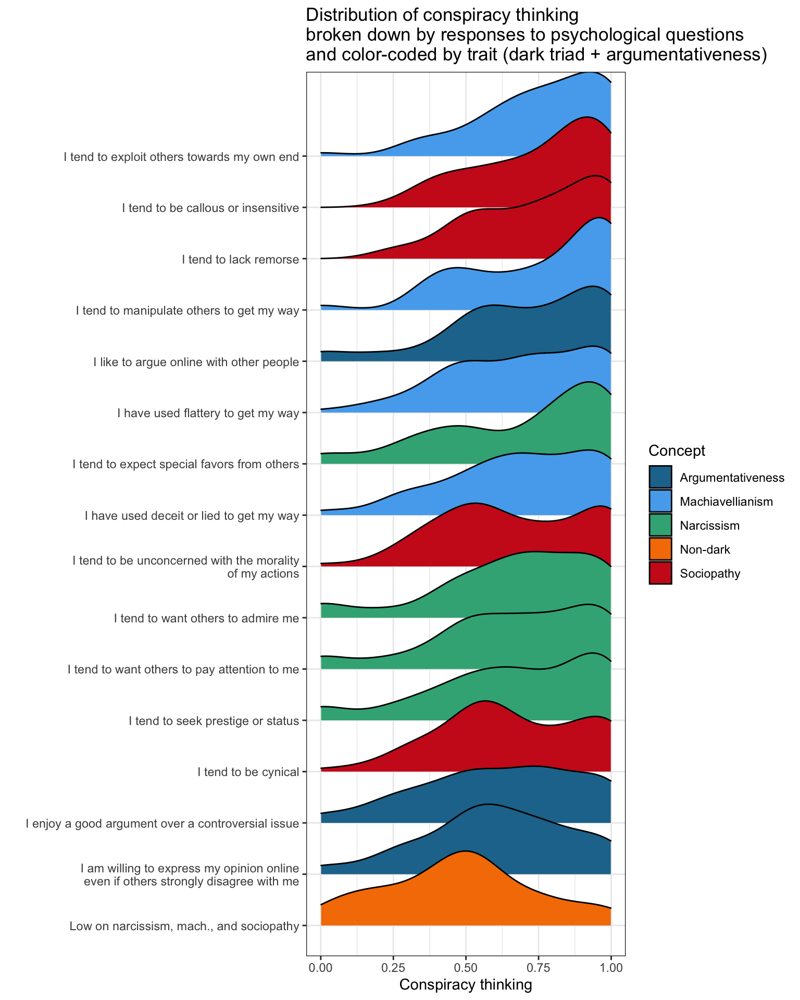

library(tidyverse)
source("data_AJPS2021/0_ajps_recode.R")6 Advanced ggplot
Grab a subset of variables (i.e. psychological measurements), and show the distribution of conspiracy thinking when respondents report a particular trait:
x <- c("argue1", "argue2", "argue3", "manip1", "manip2", "manip3", "manip4",
"attent1", "attent2", "attent3", "attent4",
"insens1","insens2","insens3","insens4")
#d1$nondark <- ifelse(d1$insens3 <=2 & d1$manip4 <=2 & d1$insens1<=2, 1,0)
d1$nondark <- ifelse(d1$manipulate2 <=.2 & d1$sociopathy2 <= .2 & d1$attend2 <=.2, 1,0)
The most important step is the following:
d1 %>% select(consp_Index2,
nondark,
all_of(x)) %>%
pivot_longer(cols = -consp_Index2)# A tibble: 32,000 × 3
consp_Index2 name value
<dbl> <chr> <dbl+lbl>
1 0.938 nondark 0
2 0.938 argue1 3 [Neither]
3 0.938 argue2 4 [Agree]
4 0.938 argue3 4 [Agree]
5 0.938 manip1 5 [Strongly agree]
6 0.938 manip2 5 [Strongly agree]
7 0.938 manip3 5 [Strongly agree]
8 0.938 manip4 5 [Strongly agree]
9 0.938 attent1 4 [Agree]
10 0.938 attent2 3 [Neither]
# ℹ 31,990 more rowsAnd the full plot can be generated with the following code:
d1 %>% select(consp_Index2,
nondark,
all_of(x)) %>%
pivot_longer(cols = -consp_Index2) %>%
mutate(name2 = case_when(
name == "argue1" ~ "I like to argue online with other people",
name == "argue2" ~ "I enjoy a good argument over a controversial issue",
name == "argue3" ~ "I am willing to express my opinion online\neven if others strongly disagree with me",
name == "manip1" ~ "I tend to manipulate others to get my way",
name == "manip2" ~ "I have used deceit or lied to get my way",
name == "manip3" ~ "I have used flattery to get my way",
name == "manip4" ~ "I tend to exploit others towards my own end",
name == "attent1" ~ "I tend to want others to admire me",
name == "attent2" ~ "I tend to want others to pay attention to me",
name == "attent3" ~ "I tend to seek prestige or status",
name == "attent4" ~ "I tend to expect special favors from others",
name == "insens1" ~ "I tend to lack remorse",
name == "insens2" ~ "I tend to be unconcerned with the morality\nof my actions",
name == "insens3" ~ "I tend to be callous or insensitive",
name == "insens4" ~ "I tend to be cynical",
name == "nondark" ~ "Low on narcissism, mach., and sociopathy"
),
concept = case_when(
name %in% c("argue1","argue2","argue3") ~ "Argumentativeness",
name %in% c("manip1", "manip2", "manip3", "manip4") ~ "Machiavellianism",
name %in% c("attent1", "attent2", "attent3", "attent4") ~ "Narcissism",
name %in% c("insens1","insens2","insens3","insens4") ~ "Sociopathy",
name %in% c("nondark") ~ "Non-dark"
)) %>%
filter(!is.na(value) & !is.na(consp_Index2)) %>%
mutate(agree = ifelse(value>=5,1,0)) %>%
group_by(name) %>% mutate(avg_agree = mean(agree)) %>%
group_by(name,agree) %>% mutate(avg_cons = mean(consp_Index2)) %>%
ungroup() %>%
filter(agree==1 | (name=="nondark" & value==1)) %>%
ggplot(aes(x=consp_Index2,y=fct_reorder(name2,avg_cons),
fill=concept)) +
ggridges::geom_density_ridges() +
theme_bw() +
theme(legend.position = "right") +
labs(x="Conspiracy thinking",y="",color="",fill="Concept",
title = "Distribution of conspiracy thinking\nbroken down by responses to psychological questions\nand color-coded by trait (dark triad + argumentativeness)") +
#scale_fill_manual(values=Prism5) +
see::scale_fill_social() +
scale_x_continuous(limits = c(0,1))[See the lecture notes on the course website for additional code]